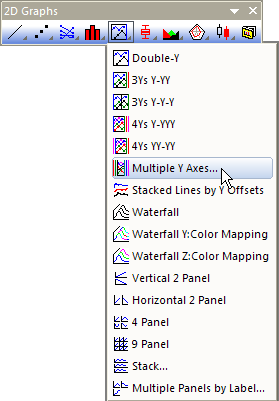
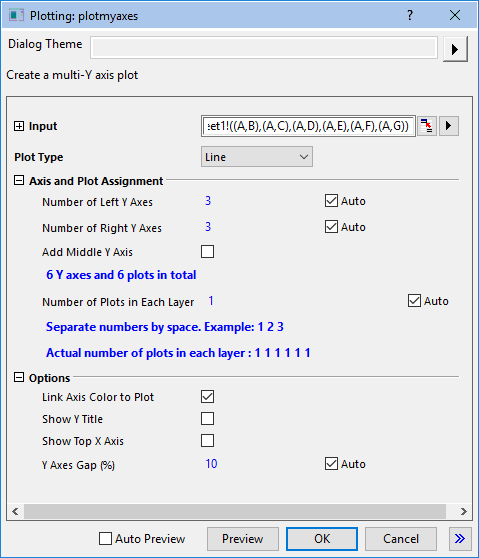

Diagramm mit mehreren Y-Achsen
MultiY-Graph

Datenanforderungen
Erfordert eine Auswahl von Y-Spalten (oder einen Bereich aus Y-Spalten). Wenn es eine verbundene X-Spalte gibt, stellt die X-Spalte die X-Werte bereit; ansonsten wird ein Abtastintervall der Y-Spalte oder Zeilennummer verwendet.
Diagramm erstellen
Wählen Sie die erforderlichen Daten aus
Wählen Sie .
oder
Klicken Sie auf die Schaltfläche Mehrere Y-Achsen auf der Symbolleiste 2D-Grafiken.
- 
Hierdurch öffnet sich das Dialogfeld plotmyaxes.
- 
Passen Sie die Zeichenoptionen benutzerdefiniert an, einschließlich dem Diagrammtyp jedes Diagramms in dem Layer, der Anzahl der Y-Achsen links, rechts oder in der Mitte der Grafik und der Anzeige der Y-Titel und der oberen X-Achse etc. Einzelheiten finden Sie hier.
Vorlage
OffsetY.OTP (im Origin-Programmordner installiert)
Notizen
- Das Diagramm mit mehreren Y-Achsen besteht aus mehreren Layern. Jede Y-Achse ist ein separater Layer.
- Wenn die Auswahl der Arbeitsblattdaten eine einzelne X-Spalte einschließt, wird jede Y-Spalte standardmäßig in ihren eigenen Layer gezeichnet.
- Wenn die Auswahl der Arbeitsblattdaten mehrere X-Spalten einschließt, ist die Anzahl der Layer gleich die Anzahl der X-Spalten, und jede X-Spalte wird standardmäßig gegen die nächste X-Spalte links von der Y-Spalte gezeichnet.
- Durch Deaktivieren der Kontrollkästchen Auto neben Anzahl der linken Y-Achsen und Anzahl der rechten Y-Achsen können Sie manuell die Anzahl der linken und rechten Y-Achsen festlegen.
- Durch Deaktivieren des Kontrollkästchens Auto neben Anzahl der Diagramme in jedem Layer können Sie eine durch Leerzeichen getrennte Liste von Zeichnungen eingeben, die zu jedem Layer hinzugefügt werden.
- Zeichnungen werden innerhalb des Layers gruppiert und durch Diagrammeigenschaften unterschieden, die für Inkrement festgelegt wurden, als die Diagrammvorlage gespeichert wurde.
- Wenn Sie Säulen als Diagrammtyp wählen, wird die Option Säulen-/Balken-/Boxenabstand über Layer standardmäßig aktiviert.
- Mehrere X-Achsen werden per Gerade (1 zu 1) mit der X-Achse von Layer 1 verknüpft. Die Y-Achsen sind nicht verknüpft.